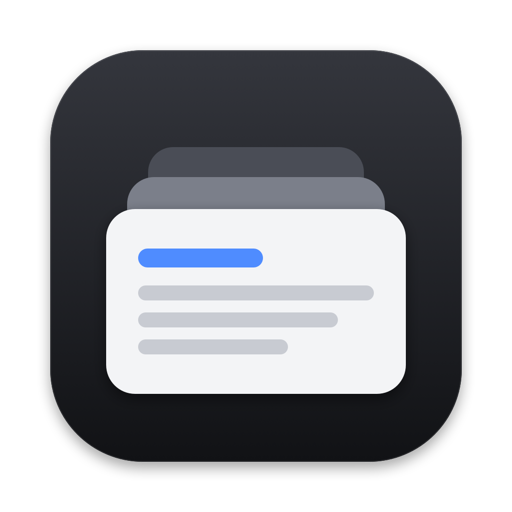
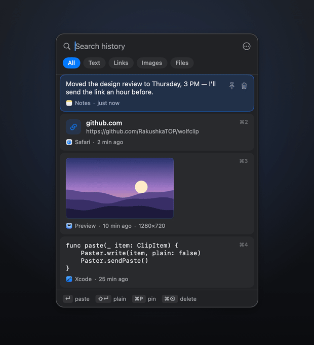

Clipboard history for Mac,
the way Win+V works on Windows
WolfClip is a free, open-source clipboard manager for macOS and Linux. Press ⇧⌘V in any app, pick anything you copied earlier, and it pastes right where you type.
brew install --cask rakushkatop/tap/wolfclip
macOS 14 Sonoma or later · Apple silicon and Intel · Apache 2.0 · updates itself

What it does
Instant paste
Pick an item and WolfClip pastes it into the app you were in. No extra keystrokes.
Everything you copy
Text, links, colors, code, images and Finder files, each shown the way it reads best.
Find it in a second
Type to search (any language), Tab through filters, ⌘1–⌘9 for the first nine items.
Pins that stay
Keep addresses, snippets and templates on top. Pinned items never expire.
Private by design
Passwords from password managers are never recorded. History stays on your computer.
Native and light
Swift and SwiftUI on macOS, GTK 4 on Linux. No Electron, near-zero CPU while idle.
WolfClip and other clipboard managers
| App | Price | Source | Runs on |
|---|---|---|---|
| WolfClip | Free | Open source, Apache 2.0 | macOS 14+, Linux |
| Maccy | Free on GitHub, $9.99 in the Mac App Store | Open source, MIT | macOS |
| CopyQ | Free | Open source, GPL-3.0 | macOS, Linux, Windows |
| Spotlight clipboard | Built into macOS 26, off by default | Apple | macOS 26+ |
| Raycast | Clipboard history in the free plan (3 months), Pro $10/month | Closed source | macOS |
| PastePal | Free, Pro $14.99 once | Closed source | macOS |
| Paste | $2.49/month or $29.99/year | Closed source | macOS |
Prices and licenses as listed by each project in October 2026. Maccy and CopyQ are great open-source picks too; WolfClip is for people who want the Windows-style flow: one shortcut, pick, and it is pasted.
Questions
Is there a Win+V clipboard history on Mac?
Not the Windows kind. WolfClip adds one: press ⇧⌘V in any app, pick an item and it is pasted where you were typing. The shortcut can be changed in Settings.
Doesn't macOS Tahoe already have clipboard history?
Yes. Since macOS 26, Spotlight has a Clipboard section. It is off by default and keeps items for up to 30 days. WolfClip adds pins that never expire, image and file previews, filters, ⌘1–⌘9 and paste straight into the app you were in. It also works on macOS 14 and 15 and on Linux.
Is WolfClip free?
Yes. It is free and open source under the Apache 2.0 license, with no subscription and no account.
How do I install it with Homebrew?
Run: brew install --cask rakushkatop/tap/wolfclip. Then open WolfClip and allow Accessibility so it can paste for you.
Does it record passwords?
No. Items that password managers mark as secret (the org.nspasteboard concealed and transient types) are skipped. The history is a local file on your computer and is never uploaded.
Why does macOS say it can't verify WolfClip?
WolfClip is ad-hoc signed and not notarized by Apple. The Homebrew cask takes care of this. If you downloaded the zip by hand, open System Settings → Privacy & Security and click Open Anyway, or run xattr -dr com.apple.quarantine /Applications/WolfClip.app.
Does it update itself?
Yes. The macOS app checks GitHub Releases at launch and every 6 hours, verifies the download's SHA-256 and code signature, and restarts while the history window is closed. History, pins and settings are kept. You can turn this off in Settings.
Does it work on Linux?
Yes. On X11 everything is built in: Super+V, auto-paste and placement at the mouse pointer. Wayland is in beta: bind wolfclip --toggle in system settings, and auto-paste needs wtype or ydotool.